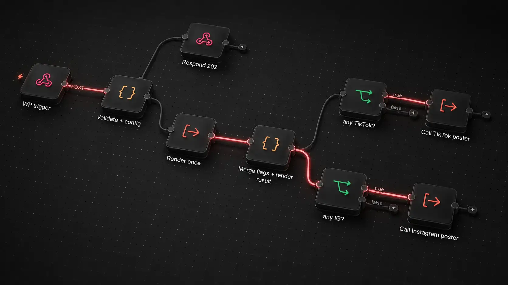

01Thought
Map what actually happens today. Find the repeated work, the dependencies, the decisions and the source of truth.
02 / Automations & Integrations
Someone exports it. Someone pastes it. Someone reformats it. Someone has quietly become the API.
I look at the workflow as a whole, decide what should happen automatically and connect the pieces with integrations, APIs, automation and AI when it genuinely improves the process.
Repetition is usually a signal that two parts of the workflow have never been properly connected.
The visible request may be “connect these two tools”. The useful work starts one step earlier. What starts the process? Which system owns the information? What needs approval? What happens when something fails? Where is a human decision actually valuable?
The result should remove unnecessary work without creating an automation nobody understands or can maintain.
Map what actually happens today. Find the repeated work, the dependencies, the decisions and the source of truth.
Define triggers, transformations, approvals, integrations, fallbacks and the points that should stay human.
Connect the systems, test the workflow against real cases and make failures visible rather than quietly losing information.

A content workflow designed to take material from WordPress and turn it into platform-ready social outputs instead of rebuilding the same post manually for each channel.
The system handles content transformation, platform-specific copy, hashtags and publishing requirements, with room for approval rules and different output types.
CRM and marketing systems, content operations, customer and consent flows, internal reporting, repetitive administration, AI-assisted production and any process currently explained with “then someone does this manually”.
Map an existing process, identify automation opportunities and decide which changes are worth building.
Connect a defined group of systems and take responsibility for the workflow between them.
Build a larger set of connected automations with shared rules, monitoring and a structure that can grow.
An idea. A problem. A project that already exists. Bring me what you have and let’s work out what comes next.
Start a conversation →